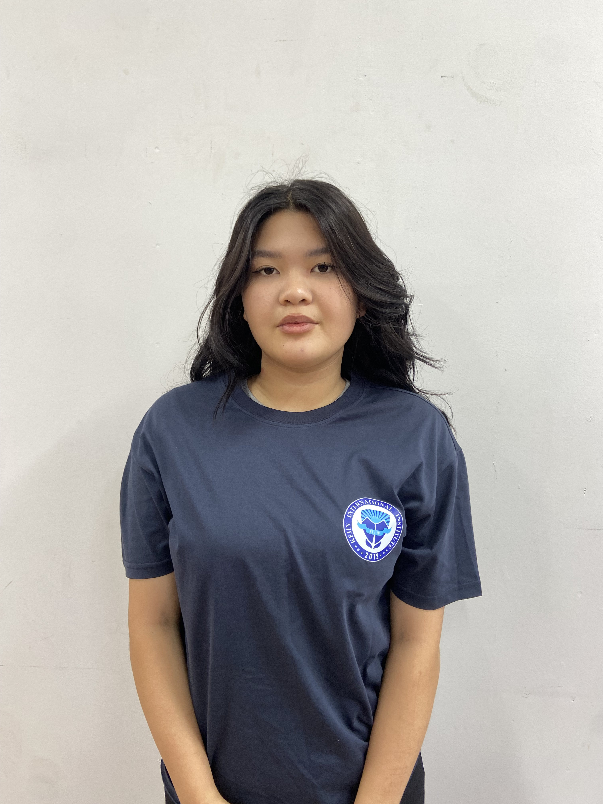

Aizhan
SMM
Айжан отвечает за связи с общественностью и имидж студсовета.
Она строит коммуникацию с другими организациями и группами.
Её речь всегда уверенная, а мысли — чёткие и логичные.
Активно продвигает проекты совета вне колледжа.
Создаёт тексты для новостей, писем и анонсов.
С ней студсовет звучит профессионально и достойно.
Она всегда в курсе, что и как подать обществу.
⬅ Назад